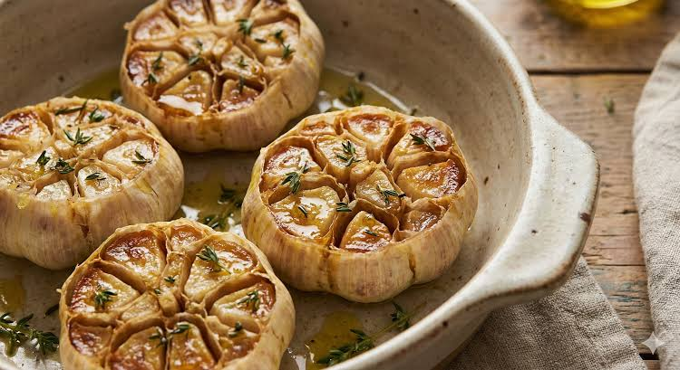

Galeria de Pratos


O restaurante Pratos de Morrer é renomado por seus pratos no mínimo preocupantes, marcado pela Lasanha de Sorvete com Pimenta Vulcânica, e outros como Pó de Chantili, Pizza de Abacaxi, e outros.
Seu lema é Sua refeição é nossa arte.

| Nome do Prato | Nível de Ardência/Loucura (0-10) | Preço em Moedas Malucas | Taxa de Sobrevivência |
| Lasanha de Sorvete com Pimenta Vulcânica | 10 | 14,50 | 4% |
| Pizza de Abacaxi com Mostarda | 11 | 50,00 | 25% |
| Sorvete de Terras do Himalaia | 3 | 23,99 | 89,9% |
| Dentes Espanta Vampiros | 7 | 22,99 | 66% (0% para Vampiros) |